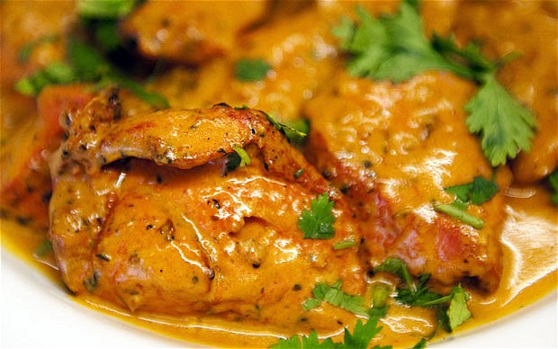

<ion-view><!--create and new ion view and content to hold the template-->
<ion-content>
 
 <br/>
 <br/><!--line breakes-->
 <br/>

<!--create new button which links back to the home page with styling-->
 <div>
  <button class="button button-dark" ui-sref="tabs.home">
    Back to home <!--text for inside the button-->
  </button>
 </div>

<!--create new div which holds the image of the food along with css inline style attributes-->  
 <div>
  
 </div>
 
 <!--Form controlled with radio buttons containing different calory sizes for portions, using controller-->
 <form name="FoodForm">
  <input type="radio" ng-model="portion.size" value="110">Small Portion <br/>
  <input type="radio" ng-model="portion.size" value="340">Medium Portion <br/>
  <input type="radio" ng-model="portion.size" value="780">Large Portion <br/>
  <tt>Calories = {{portion.size | json }}</tt><br/><!--output with controller-->
 </form>

</ion-content>
</ion-view><!--end ion content and view-->
